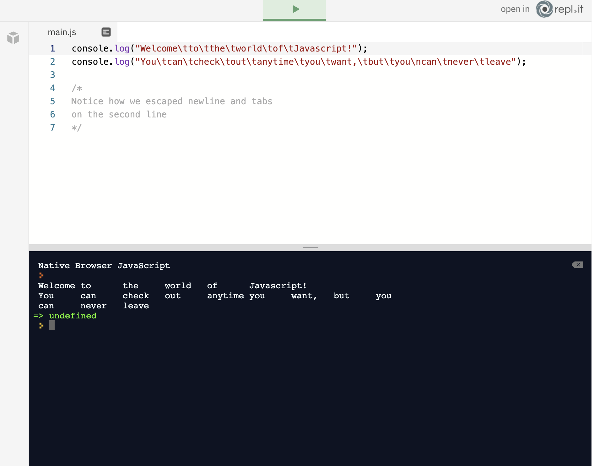
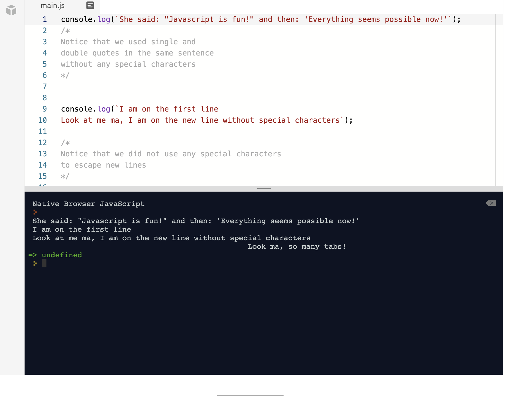
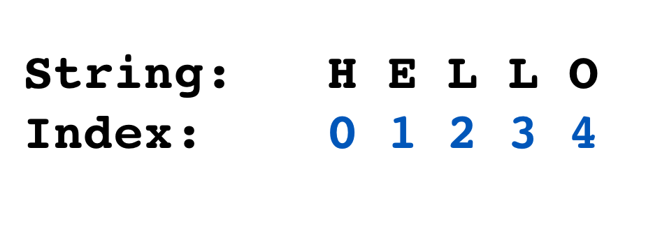
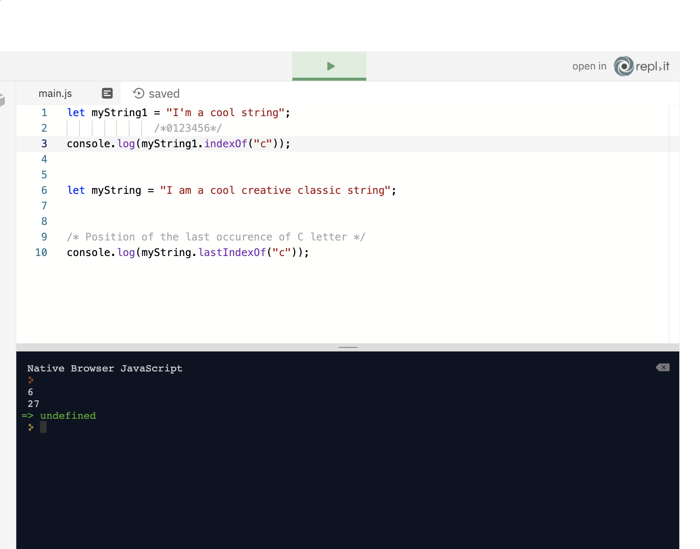
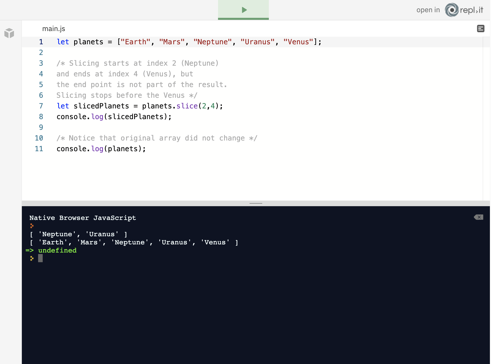
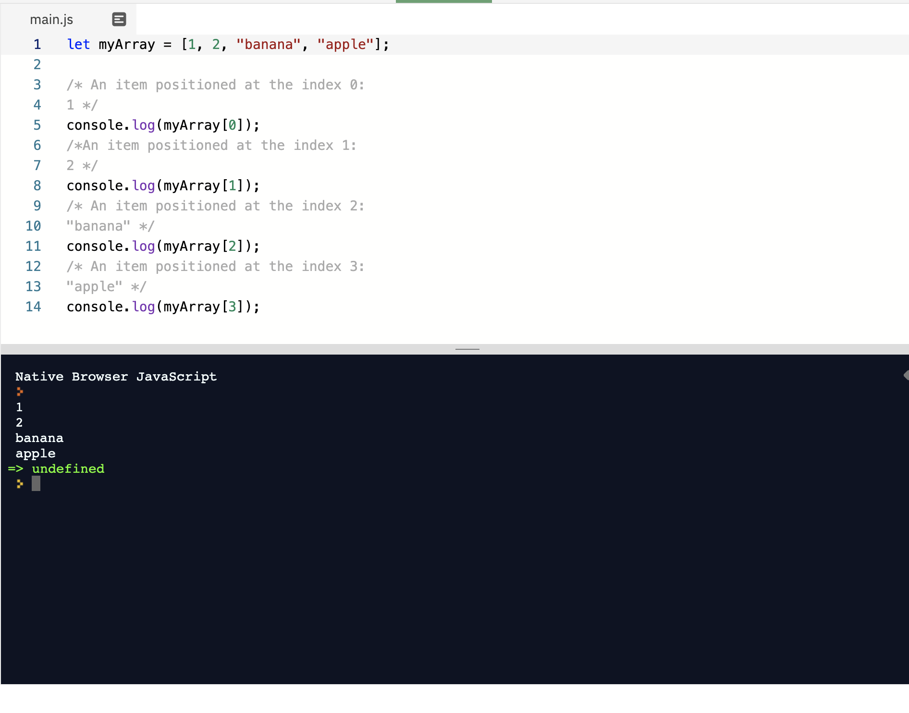
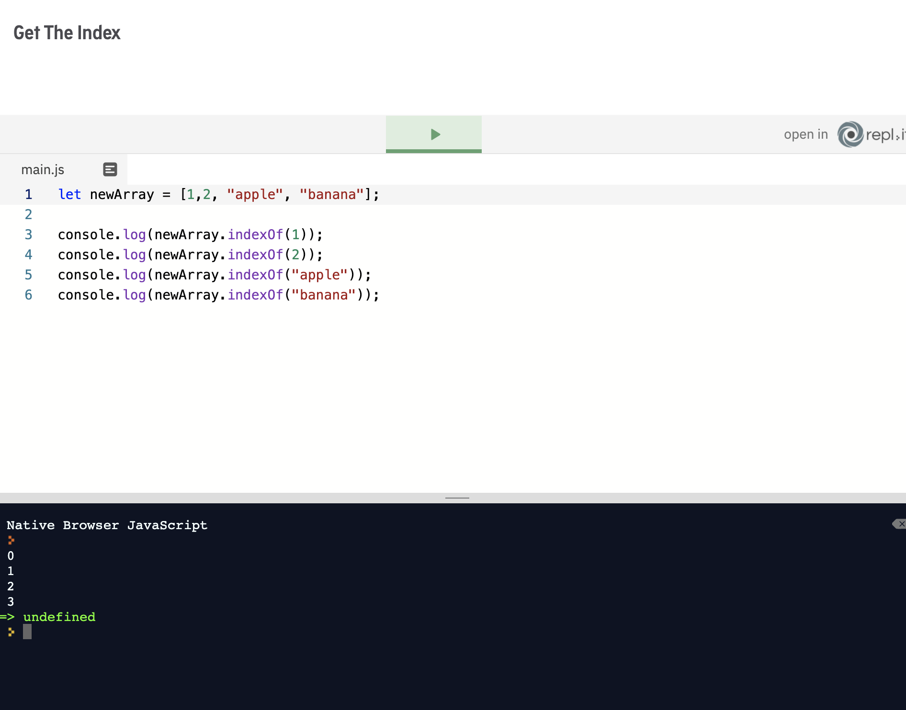

This file i will use for my own personal notes regarding Javascript. Im using an external .js file to write the javascript. Remember to Comment out correctly. I can write notes here too.
Var: A variable is like a box of data, their values can change, or vary! for example Dan is doing a programming course, he is looking at the computer, he is 34 years old.
If we want to 'save' data and assign it to a var for example the number pi, we know its 3.142 etc instead of retypuing it out we can just say.... var pi = 3.142, after that so far we just use the variable pi instead of the number, it can also change (hence the name VARIABLES.)
A second example would be when your making a calcultator for work, hourly cost can be 20 or 25 or 30 £ per hour. If thats the case just assign hourly_cost =
Variables are a time saver we assign a value but it can change .

As we said previously, variable names don’t matter to the computer, but they certainly matter to the developers. It is much more readable if you name your variable totalAmount, rather than X or just a. The developer that comes after you will then know the purpose of this variable. If you name it X, then future developers will have to first read your code and figure out what it does to see variable X in action. If you name it totalAmount, then they will probably guess what this code is going to do. The code will be much more human-readable, and human-friendly code is a quality of good coding. But certain rules need to be followed, that matter to the computer as well. So let’s see what they are about when it comes to JavaScript. Certain keywords are not supposed to be used when naming the variables. These keywords are shown in the image to the left. They should not be used because they are reserved keywords in JavaScript. They have special meaning and that meaning should never be changed:
Simply a way of naming..... first name of any var lower case any further words start with a capital
Certain rules should be followed when naming the variables: The first character can be a letter, underscore or a dollar sign, but subsequent characters can be letters, digits, dollar sign or underscores Numbers are not allowed as the first character There should not be any logical or mathematical operator anywhere in the name (/, *, -, +, &&, ||) There should not be any special symbols: !, @, *, ? etc. Spaces are not allowed: lower camelCase should be used instead. If you want to name your variable “current slide”, then it should be named currentSlide
JavaScript represents numbers as whole numeric characters – 47, referred to as an integer
Or as a fractional form using decimals ex. 7.417 this is referred to as a floating point number or float.
A number is one of the three core types of data used by JavaScript. But before we go on, let’s get some basic terminology in place.
As with most programming languages, a fundamental concept within JavaScript is an expression. An expression produces or results in some value.
Notes: In programming we use arithmetic operators - simply put (+ _ * ) are operators, they operate on values.
for example
in this example the - sign is the operator and the operands are 10 and 0 the result is the EXPRESSION
the remainder operatur returns the remained left over this is used by the % sign
example
/* The result of this expression is not how many time 10 is divided by 3 but is the remainder left after the division. If the divisor (on the right) divides evenly into the dividend (on the left) the answer will always be 0 */ 10 % 3;
raising the left operand to the power right operand
or to the Power of
3 ** 3; = 27 or (3x3x3)
Now let’s look at the remainder of JavaScript’s standard arithmetic operators.
Unary - consisting of or involving a single component or element. Unary negation of 2 is the integer '-2'

See javascript for correct view.
/* First "a" variable was set to 5 but then we increased it by one. Try changing the two plus signs into into minus signs and see what happens */ javascript
let a = 5; a++; console.log(a); /* First we set variable b to 8 and then we used unary negation to set the value for variable c. */ var b = 8; var c = -b; console.log(c);
the order of the rules counts
console.log((10 + 10) * 20)
will output 400
Floating point numbers are numbers that are followed by decimal points. JavaScript also treats integers as floating point numbers; the only difference is that, if the number doesn’t have anything after the decimal it will just pretend that the decimal point isn’t there and display the value as a whole number.
Example: 0.4 + 0.1; returns: 0.5
issues with Floating point numbers
JavaScript has some special "types" of numbers reserved for when you get your maths badly wrong! What if you decided to perform mathematical operations on some text? Everyone knows that you can't divide a "donkey" by 4 (please don't try it). If you try to perform maths on some text (we also call this text a "string"), then JavaScript will tell you that the result is "NaN", which stands for “not a number”. It is a computational mistake. You can’t divide a string by a number or perform any other mathematical operation on strings. What if you try to divide a number by zero? Computers don't like that! JavaScript will return a number type called Infinity. What if you divide negative numbers by zero? You will get -Infinity.
You cant divide strings (you can slice) but you cant perform maths on strings.
/* You can't divide by zero */
console.log(1 / 0);
/* No, not even negative numbers should
be divided by zero */
console.log(-1 / 0);
console.log("How can a string be divided by number?" / 2);
Native Browser JavaScript Infinity -Infinity NaN => undefined
Sometimes, we need to work with very large or very small numbers. Fortunately, JavaScript can help us here.
What if we want to write a massive number like 10000000000 which has ten zeros, for example? Well, it is easy to make a mistake, to miss a zero or add one extra. JavaScript gives us more straightforward ways to write such large numbers by using the letter e followed by the number of zeros we need. We can use the same notation for small numbers too. This is called exponentiation. The exponent is the number following the letter e
.
So, we could represent one billion (1 followed by 9 zeros) as: 1e9 . Conversely, a nanosecond, which is one billionth of a second, would be represented as 1e-9. Notice we use a minus sign before the exponent for small numbers.
/* 4 followed by ten zeros */ console.log(4e10); /* 1 with six leading zeros */ 1e-6;
will return
Native Browser JavaScript 40000000000 => 0.000001
In the Number Types unit, you learned about how JavaScript works with numbers. You also learned about special number types, such as Infinity and NaN Your challenge is to: Change the arithmetic in the console.log so that it returns Infinity Requirements: Don't just add the word "Infinity", we want you to change the arithmetic so that the result is the special number type, Infinity.
// Change the math so that it returns Infinity console.log(1/0);
Explaination you cant divide 1/0 thus giving Infinity
They are actions that can be performed on numbers
They affect the original number in some way
How do you use it? Add '.', method name & argument in parenthesis after object: object.nameOfTheMethod(argument);
Number methods might all sound confusing, but actually, it is really straightforward. Let’s just say that the methods are things that can do stuff. If you think about human and computer language, they are quite alike. You can think of numbers as nouns and methods as verbs. Verbs do stuff to nouns. Let’s say you have a sentence “Sun is shining”. In JavaScript, it would be sun.shining() where sun is an object and shining is a method. Developers now can say that they called shining on the sun which means that they called the shining method on the sun object. They did something with the sun; they made it shine. So let’s look at some of the methods that are usually performed on numbers.
parseInt() parses a string and returns an integer
parseFloat() takes a string and returns a floating-point number
console.log(
Number.parseInt("10"),
Number.parseInt("3.14"),
Number.parseInt("I am not an integer"));
console.log(
Number.parseFloat("10"),
Number.parseFloat("3.14"),
Number.parseFloat("I am not a float"));
returns
Native Browser JavaScript 10 3 NaN 10 3.14 NaN => undefined
toString() converts a number to a string toFixed(2) converts a number to a string, but keeping only two decimals Back in the Floats unit, you may remember that we mentioned that we can encounter issues working with floating-point numbers. These issues are related to precision. So, if you add the numbers 0.1 and 0.2 in JavaScript, you don't get a nice, clean 0.3 as you'd expect. Instead, you get a result like: 0.30000000000000004. If you want to know why this happens, then please read the section at the bottom of this page. If you just want to know how to fix the precision issue, then set the number of decimal places using the toFixed() method, as demonstrated below.
console.log( 2.34345345.toFixed(5), // 5 decimals 2.33333.toFixed(1), // 1 decimal 1.1.toFixed(10) // 10 decimals ); var myNum = 85; myNum.toString(); // '85'
will return
Native Browser JavaScript 2.34345 2.3 1.1000000000 => '85'
isFinite(number) checks if the value in parenthesis is an actual number isInteger(number) checks if the value in parenthesis is an integer isNaN(number) checks if the value in parenthesis is NaN
/*
COPY PASTE EACH LINE OF CODE BELOW TO THE ADJACENT NATIVE BROWSER JAVASCRIPT
*/
/* Returns true because it is a real number.*/
Number.isFinite(123);
/* Returns false because -Infinity is not an actual number */
Number.isFinite(-Infinity);
/* Returns true because result of 0/0 is NaN */
Number.isNaN(0 / 0);
/* Returns true because result of "a" * 3 is NaN */
Number.isNaN("a" * 3);
/* True because 1 is an integer */
Number.isInteger(1);
/* False because banana is not an integer */
Number.isInteger("banana");
To fully understand the problem, we have to understand how computers store numbers internally. JavaScript uses a format called 64-bit binary floating-point. And this format cannot accurately represent numbers like 0.1 or 0.2 at all! So, JavaScript has to round these numbers to be able to store them. It's in this rounding process that the errors creep in.
Well, it's not stupid. It's just different. For example, our numbering system can't represent certain numbers properly. If you divide 10 by 3, you get 3.33333333, but if you multiply 3.33333333 by 3, you don't get 10. Instead, you get 9.99999999. In other words, we get a rounding error. When we know about it, we can work around it, and it's the same with 64-bit binary floating-point numbers.
This is a good question. The simplest answer is that this format gives the best performance. It does have some quirks, but it allows the computer to perform calculations faster and in a format that it understands. It's beyond the scope of this course to explain these formats, but feel free to read about the IEEE-754 standard if you want to dive deeper into it.
what is it: helps with mathematical operations - we use it by calling methods on Math object
Knowing methods, it will become easier to use the syntax for calling methods on Math object.
console.log( Math.floor(1.1), // rounds down the number Math.ceil(1.1), // rounds up the number Math.round(1.4), // rounds to the nearest integer Math.trunc(1.1), // removes the decimal part Math.sqrt(81), // returns 9 because 9 * 9 is 81 Math.cbrt(64) // returns 4 because 4 * 4 * 4 is 64 )
will return
Native Browser JavaScript 1 2 1 1 9 4 => undefined
more info: https://developer.mozilla.org/en-US/docs/Web/JavaScript/Reference/Global_Objects/Math
let myStringInt = '10'; let myStringFloat = '1.275'; // Fix this code so that it adds correctly let result = parseInt(myStringInt) + parseFloat(myStringFloat); // This will print your results to the console console.log(result);
a string is txt/// Strings are fundamental in a developer’s life. Wherever there is a textual data, you are going to need to use strings; first name, last name, city, occupation etc. are all going to represented as strings.
we active them by By enclosing a piece of text in quotations
/* Whatever we put in quotes become string
These are all strings */
let a = "I am string";
let b = "3"; // If there were no quotes here, it would be a number
let c = "false"; // If there were no quotes here, it would be a boolean
let n = "Alan";
n = b + c;
console.log("My name is " + "Paul");
console.log("My name is " + n);
console.log('Hello World')
What is it The different types of quotations that can be used to denote strings in JavaScript
What does it do? Denotes the beginning and end of a string
How do you use it
Strings can be enclosed in either single ('this is a string') or double quotes ("this is a string")
Use single or double strings as long as you are consistent.
let singleQuote = 'single quoted string'; let doubleQuote = "double quoted string"; console.log(singleQuote); console.log(doubleQuote);
Results return exactly the same.
Note: Strings are used to represent textual data. Putting quotation marks around anything you type turns it into a string.
// Define the variables below to fix the syntax errors let quote = 'Our greatest glory is not in never falling, but in rising every time we fall.' let meaningOfLife = '42' let oneEqualsTwo = 'false'
you can use two types of ' and " so this can allow you to add apostrophe or quotations in to your strings just use the opposites! see below for example
// Define the variables below: let stringWithQuotes = 'Confucius once said, "It does not matter how slowly you go, as long as you do not stop."' let stringWithApostrophe = "Everything you've ever wanted is on the other side of fear." // These lines will log your quotes to the console: console.log(stringWithQuotes); console.log(stringWithApostrophe);
is a special javascript character
allowing us to add a new line into a string
its used by \n

When working with text, sometimes we may need to create a line-break, separate paragraphs or other pieces of text. We can do this using the newline character (\n). You may also see newlines being created using the carriage return character (\r). In many cases \n and \r are treated as the same by the interpreter, but they are intended to be different. We recommend that you only use \n to create a new line.
/*
Each word will be on a separate line
*/
console.log("What\na\nbeautiful\nday");
returns
Native Browser JavaScript What a beautiful day => undefined
also a special JavaScript character allowing up to add a tab in a string we simply add \t whenever a new tab is required.
metimes we may need to use a tab, or indent, to denote a new paragraph or some piece of information. In this case, we would use \t
are a way of formatting strings without the use of escape characters
gives us a literal rep of a sstring, including and new lines or tabs
we use it by putting anything we need in ` ` quotes Bottom left keyboard and everything will be escaped
Video Explaining template literals In the first Strings lesson you learned about the basics of creating strings and how to handle strings with quotation marks in them. However, it could become annoying or tedious to always remember whether to use single or double quotes when they really were meant to be interchangeable when defining strings in JavaScript.
// Define the haiku variable here: let haiku = `Power down your brain Motion will now take over Ride this inertia` // This will log your haiku to the console: console.log(haiku);
by simply using the backtick i was able to just copy and paste the text required instead of using a \n or /t MUCH EASIER
// Define the fileTree variable here: let fileTree= ` ` // This will log the fileTree variable to the console: console.log(fileTree);
// Define the fileTree variable here: let fileTree= 'My computer\n\tC:\\\n\t\tDocuments\n\t\tHome\n\t\tPics\n\t\tProgram Files\n\tD:\\\n\t\tBackup' // This will log the fileTree variable to the console: console.log(fileTree);
easier using template literals.
are actions for strings which can change and manipulate strings
Use name of the method on the string object. Add string methods after the string object –
string.nameOfTheMethod();
Remember from our Number Methods lesson, that a method performs an action. Strings have methods too, and we're going to look at the common ones in this lesson. We can use the indexOf() method to find the position of a character in the string. Like most programming languages, JavaScript uses zero indexing, which means that the index of characters starts at 0. As you can see from the following example:
notes: remember we start at zero, and even spaces and punctuation are counted as numbers, be aware!
think of a slice of bread, we can chose which part of the loaf we want, starting again at zero and ending where we want. this is returned by...

let myString = "Creativity";
/*0123456789 */
/* It excluded first character at the zeroth position
and seventh character and everything after it*/
myString.slice(1, 7);
changing the case of the string
let myString = "I am string"; let lowercasedString = myString.toLowerCase(); let uppercasedString = myString.toUpperCase(); console.log(lowercasedString); console.log(uppercasedString);
and find out the string lengh
let myString = "I'm a very cool string"; console.log(myString.length);
we can repeat strings
let myString = "Hello!"; myString.repeat(3);
for even more string methods visit
joining character strings end to end, joining two or more strings
we use this by using the + operator on the string the concat method or template literals
how to string concatenation using the + operator.
let firstString = "I am "; let secondString = "in love with Javascript!"; /* Here we are joning firstString and secondString */ let newString = firstString + secondString;
let str1 = "Hello "; let str2 = "there!"; let str3 = " What a beautiful day to learn Javascript concatenation, right?"; /* We added str2 and str3 to str1 by using concat method. Try switching order of strings in concat method. For example, put str2 before concat keyword and str1 before str3 in parentheses and see what happens */ str1.concat(str2, str3);
But there is an even better way with ES6. Remember template literals? Well, you can now join two strings by simply putting the name of the strings in the curly brackets preceded by the dollar sign:
`${firstString + secondString}`
let first = "First string";
let second = " Second string";
/* Notice we used
quotes for template literal */
console.log(`Concatenation is joining two strings:
${first + second}.`);
returns
Native Browser JavaScript Concatenation is joining two strings: First string Second string.
is an insertion of values from another object into the current string, it inserts the value of another objects value into the current string
we achieve this by using concatenation or template literals
Back in the old days, when there were no template literals, you could not insert values of new strings into the new one without closing it first. If you wanted to insert something in the middle of the string, you needed to close its first and last part with quotes. And you had to use plus operators:
let leftSide = 10;
let rightSide = 20;
/* We inserted values of two strings into a new string.
Notice the plus operators and how we had to split our main string
into several chunks*/
console.log("Left side is equal to " + leftSide + " and right side is equal to " + rightSide);
let leftSide = 10;
let rightSide = 20;
/* We inserted values of two strings into a new string */
console.log(`Left side is equal to ${leftSide} and
right side is equal to ${rightSide}.`);
returns
Left side is equal to 10 and right side is equal to 20.
let quote = 'Whatever the mind can conceive and believe, it can achieve.'; // Use the slice() method here to assign words to the // conceive, believe and achieve variables: let conceive = quote.slice(22,30) let believe = quote.slice(35,42) let achieve = quote.slice(51,58) // This will log the three variable you create to the console console.log(conceive, believe, achieve);
my slice test
let quote = 'Whatever the mind can conceive and believe, it can achieve.'; // Use the slice() method here to assign words to the // conceive, believe and achieve variables: let conceive = quote.slice(22,30) let believe = quote.slice(35,42) let achieve = quote.slice(51,58) let slicetest = quote.slice(1,2) // This will log the three variable you create to the console console.log(conceive, believe, achieve); console.log(slicetest);
returns
Native Browser JavaScript conceive believe achieve h
what i learned here is counting the slices... 0,1 would return W, 1,2 would return H
HOLY SHIT!!!
// These variables will be sliced and concatinated
// to form the emailAddress variable:
let fullName = 'Andrew Martin';
let domainName = 'gmail';
let tld = 'com';
// Define the emailAddress variable here.
// Remember to use the slice() and toLowerCase() string methods:
let emailAddress = `${fullName.slice(0,6) .toLowerCase()}.${fullName.slice(7,13).toLowerCase()}@${domainName}.${tld}`
// This will log the emailAddress variable to the console
console.log(emailAddress);
returns
andrew.martin@gmail.com
notes on this section:
Arrays are a data type in javascript you can think of arrays as a list of values,storing multiple values in the same variable. they are not specific to JavaScript
What is an array? Well, you've already learned how to create individual variables, which can be strings, numbers or Boolean true/false values. An array is simply a list of values, which is stored in one variable. Arrays can be created using literal notation. You can simply declare a new variable and assign the data in the [] brackets. The data in brackets can be any data type you want: strings, numbers, booleans and even arrays themselves:
let myArray = [1, 2, "banana", "apple"]; console.log(myArray);
returns
[ 1, 2, 'banana', 'apple' ]
Array can be created with the Array() constructor: new Array("item1", "item2", "item3");
literal notation is the preferred way of creating arrays ^^ above.
is a position of an item in an array
allowing us to acces data from a specific position
we use it by using the indexing notation for example myArray[0]
An array in the example below has four items. Each item in the array has a position. It is called an index, and it is a number. Items in arrays start at zero, which means that in our example, number 1 will be at position 0, number 2 at position 1, “banana” at 2 and “apple” at 3.
let myArray = [1, 2, "banana", "apple"]; console.log(myArray);
returns
[ 1, 2, 'banana', 'apple' ]
If you want to access an item in the array, you can just add the index number after the brackets. The output will be an item that is positioned at the number given in brackets. For the sake of simplicity we will use the same example:
this is accomplished by using the console.log(newArray.indexof(1)); see below
